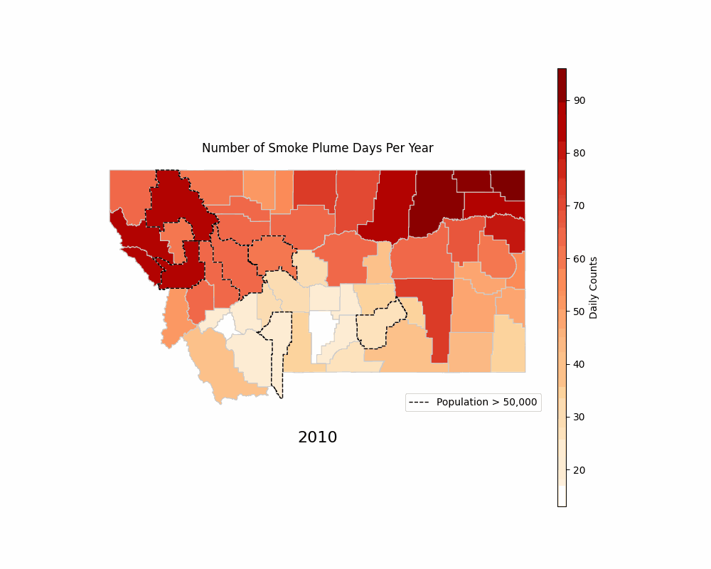
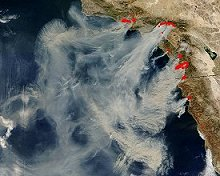

Montana Smoke Days

MT Smoke Days This is a visual representation of all the days that Montana experienced smoke from 2010-2020

The Hazard Mapping System Fire and Smoke Product, often referred to as the HMS Fire and Smoke Product, is a tool used by government agencies in the United States, particularly the National Oceanic and Atmospheric Administration (NOAA) and the National Weather Service (NWS), to monitor and provide information about wildfires and smoke plumes. The system is designed to help assess the impact of wildfires on air quality, weather conditions, and public health. It provides valuable information for public safety, emergency response, and the general public.